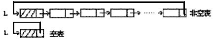
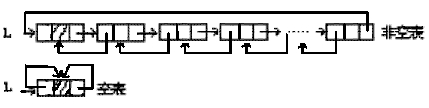
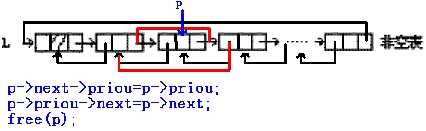
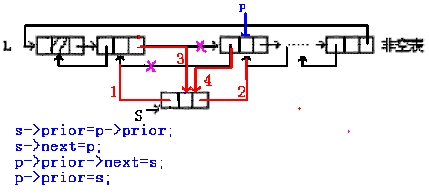

第九课
本课主题： 循环链表与双向链表
教学目的： 掌握循环链表的概念，掌握双向链表的的表示与实现
教学重点： 双向链表的表示与实现
教学难点： 双向链表的存储表示
授课内容：
一、复习线性链表的存储结构
二、循环链表的存储结构
循环链表是加一种形式的链式存储结构。它的特点是表中最后一个结点的指针域指向头结点。

循环链表的操作和线性链表基本一致，差别仅在于算法中的循环条件不是p或p->next是否为空，而是它们是否等于头指针。
三、双向链表的存储结构

提问：单向链表的缺点是什么？
提示：如何寻找结点的直接前趋。
双向链表可以克服单链表的单向性的缺点。
在双向链表的结点中有两个指针域，其一指向直接后继，另一指向直接前趋。
1、线性表的双向链表存储结构
typedef struct DulNode{
struct DulNode *prior;
ElemType data;
struct DulNode *next;
}DulNode,*DuLinkList;
对指向双向链表任一结点的指针d，有下面的关系：
d->next->priou=d->priou->next=d
即：当前结点后继的前趋是自身，当前结点前趋的后继也是自身。
2、双向链表的删除操作

Status ListDelete_DuL(DuLinkList &L,int i,ElemType &e){
if(!(p=GetElemP_DuL(L,i)))
return ERROR;
e=p->data;
p->prior->next=p->next;
p->next->prior=p->pror;
free(p);
return OK;
}//ListDelete_DuL
3、双向链表的插入操作

Status ListInsert_DuL(DuLinkList &L,int i,ElemType &e){
if(!(p=GetElemP_DuL(L,i)))
return ERROR;
if(!(s=(DuLinkList)malloc(sizeof(DuLNode)))) return ERROR;
s->data=e;
s->prior=p->prior;
p->prior->next=s;
s->next=p;
p->prior=s;
return OK;
}//ListInsert_DuL
四、一个完整的带头结点的线性边表类型定义：
typedef struct LNode{
ElemType data;
struct LNode *next;
}*Link,*Position;
typedef struct{
Link head,tail;
int len;
}LinkList;
Status MakeNode(Link &p,ElemType e);
//分配由p指向的值为e的结点，并返回OK；若分配失败，则返回ERROR
void FreeNode(Link &p);
//释放p所指结点
Status InitLinst(LinkList &L);
//构造一个空的线性链表L
Status DestroyLinst(LinkList &L);
//销毁线性链表L，L不再存在
Status ClearList(LinkList &L);
//将线性链表L重置为空表，并释放原链表的结点空间
Status InsFirst(Link h,Link s);
//已知h指向线性链表的头结点，将s所指结点插入在第一个结点之前
Status DelFirst(Link h,Link &q);
//已知h指向线性链表的头结点，删除链表中的第一个结点并以q返回
Status Append(LinkList &L,Link s);
//将指针s所指(彼此以指针相链)的一串结点链接在线性链表L的最后一个结点
//之后，并改变链表L的尾指针指向新的尾结点
Status Remove(LinkList &L,Link &q);
//删除线性链表L中的尾结点并以q返回，改变链表L的尾指针指向新的尾结点
Status InsBefore(LinkList &L,Link &p,Link s);
//已知p指向线性链表L中的一个结点，将s所指结点插入在p所指结点之前，
//并修改指针p指向新插入的结点
Status InsAfter(LinkList &L,Link &p,Link s);
//已知p指向线性链表L中的一个结点，将s所指结点插入在p所指结点之后，
//并修改指针p指向新插入的结点
Status SetCurElem(Link &p,ElemType e);
//已知p指向线性链表中的一个结点，用e更新p所指结点中数据元素的值
ElemType GetCurElem(Link p);
//已知p指向线性链表中的一个结点，返回p所指结点中数据元素的值
Status ListEmpty(LinkList L);
//若线性链表L为空表，则返回TRUE,否则返回FALSE
int ListLength(LinkList L);
//返回线性链表L中的元素个数
Position GetHead(LinkList L);
//返回线性链表L中头结点的位置
Position GetLast(LinkList L);
//返回线性链表L中最后一个结点的位置
Position PriorPos(LinkList L,Link p);
//已知p指向线性链表L中的一个结点，返回p所指结点的直接前趋的值
//若无前趋，返回NULL
Position NextPos(LinkList L,Link p);
//已知p指向线性链表L中的一个结点，返回p所指结点的直接后继的值
//若无后继，返回NULL
Status LocatePos(LinkList L,int i,Link &p);
//返回p指示线性链表L中第i个结点的位置并返回OK,i值不合法时返回ERROR
Position LocateElem(LinkList L,ElemType e,
Status(*compare)(ElemType,ElemType));//返回线性链表L中第1个与e满足函数compare()判定关系的元素的位置，
//若下存在这样的元素，则返回NULL
Status ListTraverse(LinkList L,Status(*visit)());
//依次对L的每个元素调用函数visit()。一旦visit()失败，则操作失败。
五、总结本课内容
循环链表的存储结构
双向链表的存储结构